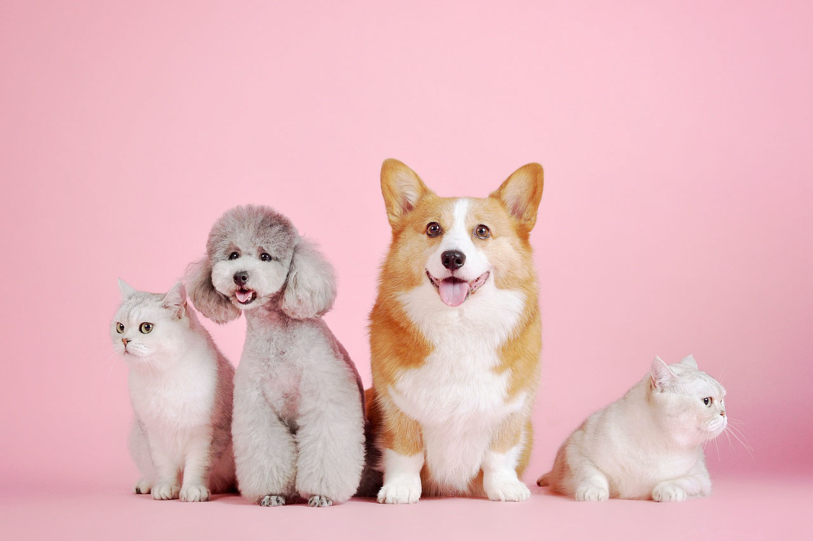

Gibby's Gift Guide! Valentine's with Your Pets
Published on
Celebrate Valentine's Day with us here at Gibby's Grooming with a gift guide for that special furry friend in your life! Read more...
Get the latest tips, stories, and advice on pet grooming and care.
Published on
Celebrate Valentine's Day with us here at Gibby's Grooming with a gift guide for that special furry friend in your life! Read more...

Published on
Nail trims are essential for your pet's health. Find out why and how often you should trim. Read more...

Published on
Learn how to keep your furry friend looking and feeling their best with these simple grooming tips. Read more...

Published on
Shedding isn't just annoying to you, but for your pet too! Learn more about the benefits of de-shedding. Read more...